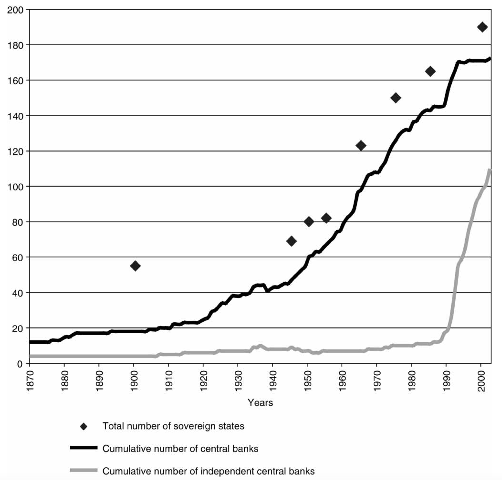

<!DOCTYPE html>
<html lang="en">
  <head>
    <meta charset="utf-8" />
    <meta name="viewport" content="width=device-width, initial-scale=1.0, maximum-scale=1.0, user-scalable=no" />

    <title></title>
    <link rel="stylesheet" href="dist/reveal.css" />
    <link rel="stylesheet" href="css/stefano.css" id="theme" />
    <link rel="stylesheet" href="plugin/highlight/zenburn.css" />
	<link rel="stylesheet" href="css/layout.css" />
	<link rel="stylesheet" href="plugin/customcontrols/style.css">

	<link rel="stylesheet" href="plugin/reveal-pointer/pointer.css" />


    <script defer src="dist/fontawesome/all.min.js"></script>

	<script type="text/javascript">
		var forgetPop = true;
		function onPopState(event) {
			if(forgetPop){
				forgetPop = false;
			} else {
				parent.postMessage(event.target.location.href, "app://obsidian.md");
			}
        }
		window.onpopstate = onPopState;
		window.onmessage = event => {
			if(event.data == "reload"){
				window.document.location.reload();
			}
			forgetPop = true;
		}

		function fitElements(){
			const itemsToFit = document.getElementsByClassName('fitText');
			for (const item in itemsToFit) {
				if (Object.hasOwnProperty.call(itemsToFit, item)) {
					var element = itemsToFit[item];
					fitElement(element,1, 1000);
					element.classList.remove('fitText');
				}
			}
		}

		function fitElement(element, start, end){

			let size = (end + start) / 2;
			element.style.fontSize = `${size}px`;

			if(Math.abs(start - end) < 1){
				while(element.scrollHeight > element.offsetHeight){
					size--;
					element.style.fontSize = `${size}px`;
				}
				return;
			}

			if(element.scrollHeight > element.offsetHeight){
				fitElement(element, start, size);
			} else {
				fitElement(element, size, end);
			}		
		}


		document.onreadystatechange = () => {
			fitElements();
			if (document.readyState === 'complete') {
				if (window.location.href.indexOf("?export") != -1){
					parent.postMessage(event.target.location.href, "app://obsidian.md");
				}
				if (window.location.href.indexOf("print-pdf") != -1){
					let stateCheck = setInterval(() => {
						clearInterval(stateCheck);
						window.print();
					}, 250);
				}
			}
	};


        </script>
  </head>
  <body>
    <div class="reveal">
      <div class="slides"><section ><section data-markdown><script type="text/template"><!-- .slide: class="drop" -->
<div class="" style="position: absolute; left: 0px; top: 0px; height: 700px; width: 960px; min-height: 700px; display: flex; flex-direction: column; align-items: center; justify-content: center" absolute="true">

# The Comparative Political Economy of Central Banks and Monetary Policy

IP2031 Comparative Political Economy

*Stefano Pagliari*
</div></script></section><section data-markdown><script type="text/template"><!-- .slide: class="drop" -->
<div class="" style="position: absolute; left: 0px; top: 0px; height: 700px; width: 960px; min-height: 700px; display: flex; flex-direction: column; align-items: center; justify-content: center" absolute="true">

## Outline

- &shy;<!-- .element: class="fragment" data-fragment-index="1" -->Key Facts about Central Banks
	- &shy;<!-- .element: class="fragment" data-fragment-index="2" -->Historical evolution  
	- &shy;<!-- .element: class="fragment" data-fragment-index="3" -->Role  
	- &shy;<!-- .element: class="fragment" data-fragment-index="4" -->Central Bank Independence
- &shy;<!-- .element: class="fragment" data-fragment-index="5" -->Explaining Central Bank Independence  
	- &shy;<!-- .element: class="fragment" data-fragment-index="6" -->Time-Inconsistency and the Logic of Delegation 
	- &shy;<!-- .element: class="fragment" data-fragment-index="7" -->Domestic interests  
	- &shy;<!-- .element: class="fragment" data-fragment-index="8" -->Partisanship
	- &shy;<!-- .element: class="fragment" data-fragment-index="9" -->Institutionalist explanations  
	- &shy;<!-- .element: class="fragment" data-fragment-index="10" -->Cultural Explanations  
	- &shy;<!-- .element: class="fragment" data-fragment-index="11" -->Economic Ideas
</div></script></section></section><section ><section data-markdown><script type="text/template"><!-- .slide: class="drop" -->
<div class="" style="position: absolute; left: 0px; top: 0px; height: 700px; width: 960px; min-height: 700px; display: flex; flex-direction: column; align-items: center; justify-content: center" absolute="true">

## Central Banks
</div></script></section><section data-markdown><script type="text/template"><!-- .slide: class="drop" -->
<div class="" style="position: absolute; left: 0px; top: 0px; height: 700px; width: 960px; min-height: 700px; display: flex; flex-direction: column; align-items: center; justify-content: center" absolute="true">

## Origin of Central Banks as an Institution
</div></script></section><section data-markdown><script type="text/template"><!-- .slide: class="drop" -->
<div class="" style="position: absolute; left: 0px; top: 0px; height: 700px; width: 960px; min-height: 700px; display: flex; flex-direction: column; align-items: center; justify-content: center" absolute="true">

### Origin of Central Banks
- &shy;<!-- .element: class="fragment" data-fragment-index="1" -->Key Dates
	- &shy;<!-- .element: class="fragment" data-fragment-index="2" -->1668: Sveriges Riksbank  
	- &shy;<!-- .element: class="fragment" data-fragment-index="3" -->1694: **Bank of England**  
	- &shy;<!-- .element: class="fragment" data-fragment-index="4" -->1913: **Federal Reserve**  
	- &shy;<!-- .element: class="fragment" data-fragment-index="5" -->1999: **European Central Bank**
- &shy;<!-- .element: class="fragment" data-fragment-index="6" -->Public vs. Private Agencies
	- &shy;<!-- .element: class="fragment" data-fragment-index="7" -->Some central banks originated from **private commercial banks**
	- &shy;<!-- .element: class="fragment" data-fragment-index="8" -->20th century: most central banks excluded from commercial business and converted uniquely to **public agencies**
</div></script></section><section data-markdown><script type="text/template"><!-- .slide: class="drop" -->
<div class="" style="position: absolute; left: 0px; top: 0px; height: 700px; width: 960px; min-height: 700px; display: flex; flex-direction: column; align-items: center; justify-content: center" absolute="true">

### Proportion of States with a Central Bank, 1870–2003


<small class="caption">Source: Marcussen 2005</small>
</div></script></section></section><section  data-markdown><script type="text/template"><!-- .slide: class="drop" -->
<div class="" style="position: absolute; left: 0px; top: 0px; height: 700px; width: 960px; min-height: 700px; display: flex; flex-direction: column; align-items: center; justify-content: center" absolute="true">

## What do Central Banks do?

- &shy;<!-- .element: class="fragment" data-fragment-index="1" -->**Currency**: intervene to manage the value of the currency
- &shy;<!-- .element: class="fragment" data-fragment-index="2" -->**Monetary Policy**: Influence supply of money to steer economy
- &shy;<!-- .element: class="fragment" data-fragment-index="3" -->**Provision of credit** to the economy (government or private sector)
- &shy;<!-- .element: class="fragment" data-fragment-index="4" -->**Regulation** of the banking sector and other financial activites
- &shy;<!-- .element: class="fragment" data-fragment-index="5" -->**Lender of Last Resort** providing loans to banks or that are near collapse
</div></script></section><section ><section data-markdown><script type="text/template"><!-- .slide: class="drop" -->
<div class="" style="position: absolute; left: 0px; top: 0px; height: 700px; width: 960px; min-height: 700px; display: flex; flex-direction: column; align-items: center; justify-content: center" absolute="true">

## Central Banks and Monetary Policy
</div></script></section><section data-markdown><script type="text/template"><!-- .slide: class="drop" -->
<div class="" style="position: absolute; left: 0px; top: 0px; height: 700px; width: 960px; min-height: 700px; display: flex; flex-direction: column; align-items: center; justify-content: center" absolute="true">

### What is Monetary Policy?

> "action that a country's central bank or government can take to influence how much money is in the economy and how much it costs to borrow" ([Bank of England](https://www.bankofengland.co.uk/monetary-policy)).
</div></script></section><section data-markdown><script type="text/template"><!-- .slide: class="drop" -->
<div class="" style="position: absolute; left: 0px; top: 0px; height: 700px; width: 960px; min-height: 700px; display: flex; flex-direction: column; align-items: center; justify-content: center" absolute="true">

### How do central banks conduct monetary policy? 
- &shy;<!-- .element: class="fragment" data-fragment-index="1" -->"Conventional" monetary policy tools include
	- &shy;<!-- .element: class="fragment" data-fragment-index="2" -->**Discount Rate**: Interest rate central bank charges banks for commercial loans
	- &shy;<!-- .element: class="fragment" data-fragment-index="3" -->**Reserve Requirements**: Portions of deposits that banks must hold in cash in their vaults or on deposit  in that bank's account with the central bank.
	- &shy;<!-- .element: class="fragment" data-fragment-index="4" -->**Open Market Operations**: buying and selling of government securities
</div></script></section><section data-markdown><script type="text/template"><!-- .slide: class="drop" -->
<div class="" style="position: absolute; left: 0px; top: 0px; height: 700px; width: 960px; min-height: 700px; display: flex; flex-direction: column; align-items: center; justify-content: center" absolute="true">

#### Discount Rate


</div></script></section><section data-markdown><script type="text/template"><!-- .slide: class="drop" -->
<div class="" style="position: absolute; left: 0px; top: 0px; height: 700px; width: 960px; min-height: 700px; display: flex; flex-direction: column; align-items: center; justify-content: center" absolute="true">

#### Monetary Transmission Channel


<div class="mermaid">
flowchart LR
A[Policy Rate] --> B[Short-term <br> Money Market Rates] --> C[Broader Financial Conditions] --> D[Consumption Investment <br> Aggregate Demand] --> E[Inflation] 

</div>

<small class="caption">Source: 📖 Committee on the Global Financial System (2019) 'Unconventional monetary policy tools a cross-country analysis'</small>
</div></script></section><section data-markdown><script type="text/template"><!-- .slide: class="drop" -->
<div class="" style="position: absolute; left: 0px; top: 0px; height: 700px; width: 960px; min-height: 700px; display: flex; flex-direction: column; align-items: center; justify-content: center" absolute="true">

### Unconventional Monetary Policy Tools after the Global Financial Crisis
- **Negative Interest Rate Policies**
- **Lending Operations**: expansion of lending facilities to the financial sector (longer-term loans or relaxing conditions for accessing liquidity)
- **Asset Purchase Programmes** (**Quantitative Easing**): purchase of specific assets (government or corporte bonds) on a large scale to lower interest rates and stimulate the economy
- **Forward Guidance**: clarify central banks’ intentions with respect to future policy rate settings
</div></script></section><section data-markdown><script type="text/template"><!-- .slide: class="drop" -->
<div class="" style="position: absolute; left: 0px; top: 0px; height: 700px; width: 960px; min-height: 700px; display: flex; flex-direction: column; align-items: center; justify-content: center" absolute="true">

#### Quantitative EAsing and the Bank of England


<small class="caption">Source: Bank of England (https://www.bankofengland.co.uk/quarterly-bulletin/2022/2022-q1/qe-at-the-bank-of-england-a-perspective-on-its-functioning-and-effectiveness)</small>
</div></script></section><section data-markdown><script type="text/template"><!-- .slide: class="drop" -->
<div class="" style="position: absolute; left: 0px; top: 0px; height: 700px; width: 960px; min-height: 700px; display: flex; flex-direction: column; align-items: center; justify-content: center" absolute="true">

### Monetary Policy Objectives

- &shy;<!-- .element: class="fragment" data-fragment-index="1" -->**Price Stability** (inflation)
	- &shy;<!-- .element: class="fragment" data-fragment-index="2" -->ECB has the primary and overriding objective of maintaining price stability.
	- &shy;<!-- .element: class="fragment" data-fragment-index="3" -->Bank of England and ECB have an inflation target of 2%
- &shy;<!-- .element: class="fragment" data-fragment-index="4" -->**Unemployment/Growth**
	- &shy;<!-- .element: class="fragment" data-fragment-index="5" -->US Federal Reserve has dual mandate of maintaining price stability & full employment.
- &shy;<!-- .element: class="fragment" data-fragment-index="6" -->**Value/Stability of Currency**
	- &shy;<!-- .element: class="fragment" data-fragment-index="7" -->e.g. Hong Kong SAR
</div></script></section><section data-markdown><script type="text/template"><!-- .slide: class="drop" -->
<div class="" style="position: absolute; left: 0px; top: 0px; height: 700px; width: 960px; min-height: 700px; display: flex; flex-direction: column; align-items: center; justify-content: center" absolute="true">

### Central Bank Objectives by region


</div></script></section></section><section  data-markdown><script type="text/template"><!-- .slide: class="drop" -->
<div class="" style="position: absolute; left: 0px; top: 0px; height: 700px; width: 960px; min-height: 700px; display: flex; flex-direction: column; align-items: center; justify-content: center" absolute="true">

## Other Central Bank Functions
</div></script></section><section ><section data-markdown><script type="text/template"><!-- .slide: class="drop" -->
<div class="" style="position: absolute; left: 0px; top: 0px; height: 700px; width: 960px; min-height: 700px; display: flex; flex-direction: column; align-items: center; justify-content: center" absolute="true">

## Central Banks and Currency Stability
- &shy;<!-- .element: class="fragment" data-fragment-index="1" -->History
	- &shy;<!-- .element: class="fragment" data-fragment-index="2" -->Some central banks originated from private commercial banks granted monopoly rights to issue banknotes
	- &shy;<!-- .element: class="fragment" data-fragment-index="3" -->XIXth century: central bank role focused on preserving convertibility of currency into gold/silver at a fixed 
- &shy;<!-- .element: class="fragment" data-fragment-index="4" -->Today: 
	- &shy;<!-- .element: class="fragment" data-fragment-index="5" -->Different central banks intervene to manage the value of the currency
	- &shy;<!-- .element: class="fragment" data-fragment-index="6" -->Value of the currency is not a formal objective of the ECB, Bank of England, Federal Reserve
</div></script></section><section data-markdown><script type="text/template"><!-- .slide: class="drop" -->
<div class="" style="position: absolute; left: 0px; top: 0px; height: 700px; width: 960px; min-height: 700px; display: flex; flex-direction: column; align-items: center; justify-content: center" absolute="true">

### Exchange Rate Regimes Around the World


</div></script></section></section><section ><section data-markdown><script type="text/template"><!-- .slide: class="drop" -->
<div class="" style="position: absolute; left: 0px; top: 0px; height: 700px; width: 960px; min-height: 700px; display: flex; flex-direction: column; align-items: center; justify-content: center" absolute="true">

## Central Banks and Provision of Credit

- &shy;<!-- .element: class="fragment" data-fragment-index="1" -->**Lending** to the government
	- &shy;<!-- .element: class="fragment" data-fragment-index="2" -->Central bank have historically lent to the government by acquiring sovereign debt (fiscal dominance)
	- &shy;<!-- .element: class="fragment" data-fragment-index="3" -->In recent decades, many central banks have been forbidden from financing the government
- &shy;<!-- .element: class="fragment" data-fragment-index="4" -->**Provision** of credit to the economy
	- &shy;<!-- .element: class="fragment" data-fragment-index="5" -->Many central banks involved in financing of economic sectors targeted by governments
</div></script></section><section data-markdown><script type="text/template"><!-- .slide: class="drop" -->
<div class="" style="position: absolute; left: 0px; top: 0px; height: 700px; width: 960px; min-height: 700px; display: flex; flex-direction: column; align-items: center; justify-content: center" absolute="true">

### Central Bank and Provision of Credit to the Economy


<small class="caption">Source: 📖 Jácome, Matamoros-Indorf and Townsend (2012) 'Central Bank Credit to the Government What Can We Learn from International Practices'</small>
</div></script></section></section><section ><section data-markdown><script type="text/template"><!-- .slide: class="drop" -->
<div class="" style="position: absolute; left: 0px; top: 0px; height: 700px; width: 960px; min-height: 700px; display: flex; flex-direction: column; align-items: center; justify-content: center" absolute="true">

## Central Banks and Lender of Last Resort

- &shy;<!-- .element: class="fragment" data-fragment-index="1" -->Walter Bagehot “Lombard Street” (1873)
	- &shy;<!-- .element: class="fragment" data-fragment-index="2" -->Recommended Bank of England to provide unlimited liquidity to solvent banks that faced temporary liquidity problems
- &shy;<!-- .element: class="fragment" data-fragment-index="3" -->Historical evolution
	- &shy;<!-- .element: class="fragment" data-fragment-index="4" -->1870: Bank of England receives the function of lender of last resort
	- &shy;<!-- .element: class="fragment" data-fragment-index="5" -->1913: US Federal Reserve originally created mainly in order to prevent financial panics
</div></script></section><section data-markdown><script type="text/template"><!-- .slide: class="drop" -->
<div class="" style="position: absolute; left: 0px; top: 0px; height: 700px; width: 960px; min-height: 700px; display: flex; flex-direction: column; align-items: center; justify-content: center" absolute="true">

### Lender of Last Resort during the Financial Crisis

- &shy;<!-- .element: class="fragment" data-fragment-index="1" -->Federal Reserve and other central banks extended liquidity provisions to a wider set of financial institutions (including non-banks), for unlimited amounts, and against considerably expanded collateral.
- &shy;<!-- .element: class="fragment" data-fragment-index="2" -->Creation of swap lines with foreign CBs
</div></script></section><section data-markdown><script type="text/template"><!-- .slide: class="drop" -->
<div class="" style="position: absolute; left: 0px; top: 0px; height: 700px; width: 960px; min-height: 700px; display: flex; flex-direction: column; align-items: center; justify-content: center" absolute="true">

#### Federal Reserve Lending During the Financial Crisis


<small class="caption">Source: 📖 Domanski, Moessner and Nelson (2014) 'Central Banks as Lender of Last Resort Experiences During the 2007-2010 Crisis and Lessons for the Future'</small>
</div></script></section><section data-markdown><script type="text/template"><!-- .slide: class="drop" -->
<div class="" style="position: absolute; left: 0px; top: 0px; height: 700px; width: 960px; min-height: 700px; display: flex; flex-direction: column; align-items: center; justify-content: center" absolute="true">

### US Dollar Swap Amounts Extended by the US Federal Reserve to other Central Banks


<small class="caption">Source: Federal Reserve </small>
</div></script></section><section data-markdown><script type="text/template"><!-- .slide: class="drop" -->
<div class="" style="position: absolute; left: 0px; top: 0px; height: 700px; width: 960px; min-height: 700px; display: flex; flex-direction: column; align-items: center; justify-content: center" absolute="true">

### Number of Bilateral Swap Lines


<small class="caption">Source: 📖 Perks et al. (2021) 'Evolution of Bilateral Swap Lines'</small>
</div></script></section></section><section ><section data-markdown><script type="text/template"><!-- .slide: class="drop" -->
<div class="" style="position: absolute; left: 0px; top: 0px; height: 700px; width: 960px; min-height: 700px; display: flex; flex-direction: column; align-items: center; justify-content: center" absolute="true">

## Central Banks and Financial Regulation
- 90% of central banks have full or shared responsibility for **financial stability** policy and oversight of the financial system.
- **Evolution**
	- Before the crisis: focus on **banks** and **payment systems**
	- After the crisis: **macroprudential** regulation
</div></script></section><section data-markdown><script type="text/template"><!-- .slide: class="drop" -->
<div class="" style="position: absolute; left: 0px; top: 0px; height: 700px; width: 960px; min-height: 700px; display: flex; flex-direction: column; align-items: center; justify-content: center" absolute="true">


</div></script></section></section><section ><section data-markdown><script type="text/template"><!-- .slide: class="drop" -->
<div class="" style="position: absolute; left: 0px; top: 0px; height: 700px; width: 960px; min-height: 700px; display: flex; flex-direction: column; align-items: center; justify-content: center" absolute="true">

## Central Bank Independence
</div></script></section><section data-markdown><script type="text/template"><!-- .slide: class="drop" -->
<div class="" style="position: absolute; left: 0px; top: 0px; height: 700px; width: 960px; min-height: 700px; display: flex; flex-direction: column; align-items: center; justify-content: center" absolute="true">

### Central Bank Independence
- &shy;<!-- .element: class="fragment" data-fragment-index="1" -->Varying degrees of **political control** over central banks
- &shy;<!-- .element: class="fragment" data-fragment-index="2" -->**Post-World War II**: Most central banks operated as yet another state agency, without much discretionary decision- making power
	- &shy;<!-- .element: class="fragment" data-fragment-index="3" -->Exceptions: US & Germany.
- &shy;<!-- .element: class="fragment" data-fragment-index="4" -->**Late 1980s/early 1990s**: Central bank independence gained support around the world
</div></script></section><section data-markdown><script type="text/template"><!-- .slide: class="drop" -->
<div class="" style="position: absolute; left: 0px; top: 0px; height: 700px; width: 960px; min-height: 700px; display: flex; flex-direction: column; align-items: center; justify-content: center" absolute="true">

### Evolution of Central Bank Independence



<small class="caption">Source: 📖 Marcussen (2005) 'Central banks on the move'</small>
</div></script></section><section data-markdown><script type="text/template"><!-- .slide: class="drop" -->
<div class="" style="position: absolute; left: 0px; top: 0px; height: 700px; width: 960px; min-height: 700px; display: flex; flex-direction: column; align-items: center; justify-content: center" absolute="true">

### Central Bank Independence Around the World


<small class="caption">Source: 📖 Bodea and Hicks (2015) 'Price Stability and Central Bank Independence Discipline, Credibility, and Democratic Institutions'</small>
</div></script></section><section data-markdown><script type="text/template"><!-- .slide: class="drop" -->
<div class="" style="position: absolute; left: 0px; top: 0px; height: 700px; width: 960px; min-height: 700px; display: flex; flex-direction: column; align-items: center; justify-content: center" absolute="true">

### Types of Central Bank Independence
- **Constitutional Independence**
	- **EU**: Treaty protects ECB independence. No individual EU Member State can unilaterally amend or repeal independence.
	- **Bank of England**'s independence can be repealed by ordinary legislation.  
- **Institutional independence**
	- &shy;<!-- .element: class="fragment" data-fragment-index="1" -->Legal framework and safeguards granted to central banks to carry out their tasks,
	- &shy;<!-- .element: class="fragment" data-fragment-index="2" -->**Target independence** vs. **Instrument independence**
	- &shy;<!-- .element: class="fragment" data-fragment-index="3" -->E.g. UK Legislation sets Bank of England's target (2%), EU Treaty only sets monetary policy stability objective 
	+
</div></script></section><section data-markdown><script type="text/template"><!-- .slide: class="drop" -->
<div class="" style="position: absolute; left: 0px; top: 0px; height: 700px; width: 960px; min-height: 700px; display: flex; flex-direction: column; align-items: center; justify-content: center" absolute="true">

### Types of Central Bank Independence

- &shy;<!-- .element: class="fragment" data-fragment-index="1" -->**Personnel independence**
	- &shy;<!-- .element: class="fragment" data-fragment-index="2" -->Extent to which the central bank is independent when it comes to the appointment procedures and legal protections given to individuals
	- &shy;<!-- .element: class="fragment" data-fragment-index="3" -->E.g. Length of **terms** of office (ECB 8 years, Bank of England 4 years renewable, Federal Reserve governors 14 years)
	- &shy;<!-- .element: class="fragment" data-fragment-index="4" -->E.g. Barriers to **dismissal** of central bankers
- &shy;<!-- .element: class="fragment" data-fragment-index="5" -->**Financial independence**
	- &shy;<!-- .element: class="fragment" data-fragment-index="6" -->Restrictions to the government’s ability to use the central bank’s loans to fund its expenditures
	- &shy;<!-- .element: class="fragment" data-fragment-index="7" -->E.g. Maastricht Treaty prevents ECB from buying government bonds of its members
</div></script></section><section data-markdown><script type="text/template"><!-- .slide: class="drop" -->
<div class="" style="position: absolute; left: 0px; top: 0px; height: 700px; width: 960px; min-height: 700px; display: flex; flex-direction: column; align-items: center; justify-content: center" absolute="true">

### Types of Central Bank Independence

- &shy;<!-- .element: class="fragment" data-fragment-index="1" -->**De Jure** Independence
	- &shy;<!-- .element: class="fragment" data-fragment-index="2" -->Focus on CB statutes and legislation (Cukierman 1992 )
	- &shy;<!-- .element: class="fragment" data-fragment-index="3" -->Even very autonomous central banks do however not operate in a political vacuum
- &shy;<!-- .element: class="fragment" data-fragment-index="4" -->**De Facto** Independence
	- &shy;<!-- .element: class="fragment" data-fragment-index="5" -->E.g. turnover rate of central bankers (Cukierman and Webb 1995)
	- &shy;<!-- .element: class="fragment" data-fragment-index="6" -->E.g. criticisms and threats faced by central banks to change policies (Binder 2021)
</div></script></section></section><section ><section data-markdown><script type="text/template"><!-- .slide: class="drop" -->
<div class="" style="position: absolute; left: 0px; top: 0px; height: 700px; width: 960px; min-height: 700px; display: flex; flex-direction: column; align-items: center; justify-content: center" absolute="true">

## Political Economy  Explanations for Central Banking
</div></script></section><section data-markdown><script type="text/template"><!-- .slide: class="drop" -->
<div class="" style="position: absolute; left: 0px; top: 0px; height: 700px; width: 960px; min-height: 700px; display: flex; flex-direction: column; align-items: center; justify-content: center" absolute="true">

### Time-inconsistency of Monetary Policy (Kydland & Prescott 1977)
- &shy;<!-- .element: class="fragment" data-fragment-index="1" -->Policymakers have an incentive to announce low inflation policies and then renege on that promise to achieve short-term growth for electoral reasons
- &shy;<!-- .element: class="fragment" data-fragment-index="2" -->Rational agents anticipate that temptation
- &shy;<!-- .element: class="fragment" data-fragment-index="3" -->Inflationary bias: Monetary policy boost automatically translates into inflation, with no gain in employment
- &shy;<!-- .element: class="fragment" data-fragment-index="4" -->**Logic of Delegation**: Solution is to delegate this policy to a anti-inflationary central bank removed from influence of politicians (Rogoff 1985).
</div></script></section><section data-markdown><script type="text/template"><!-- .slide: class="drop" -->
<div class="" style="position: absolute; left: 0px; top: 0px; height: 700px; width: 960px; min-height: 700px; display: flex; flex-direction: column; align-items: center; justify-content: center" absolute="true">

### Central Bank independence & Inflation: Evidence


<small class="caption">Source: 📖 Haldane (2020) 'What Has Central Bank Independence Ever Done for Us`</small>
</div></script></section><section data-markdown><script type="text/template"><!-- .slide: class="drop" -->
<div class="" style="position: absolute; left: 0px; top: 0px; height: 700px; width: 960px; min-height: 700px; display: flex; flex-direction: column; align-items: center; justify-content: center" absolute="true">

### Central Bank Independence & Inflation in Developed and Developing Countries

- Numerous studies find that CBI is associated with lower inflation in developed countries (Alesina and Summers 1993, Klomp and de Haan 2010)
- In the case of developing countries, there is less agreement on the impact of central bank independence over the level of inflation (Garriga and Rodriguez (2020)
- Posen (1995): countries with greater aversion toward inflation are more likely to grant independence to their CBI
</div></script></section><section data-markdown><script type="text/template"><!-- .slide: class="drop" -->
<div class="" style="position: absolute; left: 0px; top: 0px; height: 700px; width: 960px; min-height: 700px; display: flex; flex-direction: column; align-items: center; justify-content: center" absolute="true">

## Central Banking and Interest-Based Explanation

- &shy;<!-- .element: class="fragment" data-fragment-index="1" -->**Redistributive** impact of monetary policy
	- &shy;<!-- .element: class="fragment" data-fragment-index="2" -->Traditional view: In contrast with fiscal policy, impact of monetary policy is universal and cannot be targeted to particular groups 
	- &shy;<!-- .element: class="fragment" data-fragment-index="3" -->Counter-argument: monetary policies have distributional implications within society
- &shy;<!-- .element: class="fragment" data-fragment-index="4" -->**Inflation vs. Growth/Employment**
	- &shy;<!-- .element: class="fragment" data-fragment-index="5" -->Individuals with savings and investments benefit from a low & stable rate of inflation
	- &shy;<!-- .element: class="fragment" data-fragment-index="6" -->Individuals who rely on wages will tend to be helped more by a growing economy which maintains high levels of employment
</div></script></section><section data-markdown><script type="text/template"><!-- .slide: class="drop" -->
<div class="" style="position: absolute; left: 0px; top: 0px; height: 700px; width: 960px; min-height: 700px; display: flex; flex-direction: column; align-items: center; justify-content: center" absolute="true">

## Partisanship and Central Banking

- &shy;<!-- .element: class="fragment" data-fragment-index="1" -->Partisan Business Cycles and Monetary Policy
	- &shy;<!-- .element: class="fragment" data-fragment-index="2" -->Hibbs (1977): Left parties produce higher inflation. Right parties concerned with controlling inflation.
	- &shy;<!-- .element: class="fragment" data-fragment-index="3" -->Belke and Potrafke (2012): When central bank is not independent, interest rates are lower under left-wing governments
- &shy;<!-- .element: class="fragment" data-fragment-index="4" -->**Partisanship and Central Bank Independence**
	- &shy;<!-- .element: class="fragment" data-fragment-index="5" -->Wray (2000): CBI makes it more difficult for left-wing governments to pursue partisan goals. Delegation more likely under right-wing govt.
	- &shy;<!-- .element: class="fragment" data-fragment-index="6" -->Counter: left parties might actually be more likely to push for central bank independence in order to compensate for their lack of inflation-fighting credibility (e.g., Milesi- Ferretti, 1995).
	- &shy;<!-- .element: class="fragment" data-fragment-index="7" -->Adolph (2013): central bank tenures tend to be significantly shorter when inflation is high only under right-wing governments, and when unemployment is high under left-wing ones
</div></script></section><section data-markdown><script type="text/template"><!-- .slide: class="drop" -->
<div class="" style="position: absolute; left: 0px; top: 0px; height: 700px; width: 960px; min-height: 700px; display: flex; flex-direction: column; align-items: center; justify-content: center" absolute="true">

## Political Institutions and Central Banking
- &shy;<!-- .element: class="fragment" data-fragment-index="1" -->**Political Regime**
	- &shy;<!-- .element: class="fragment" data-fragment-index="2" -->Broz (2002):  delegation to an independent central bank will be seen as more credible in democratic context where institutions are more transparent
- &shy;<!-- .element: class="fragment" data-fragment-index="3" -->**Veto players**
	- &shy;<!-- .element: class="fragment" data-fragment-index="4" -->Keefer and Stasavage (2003): multiple constitutional checks and balances reduce the bank governor’s risk of being fired after elections, leading to lower inflation
	- &shy;<!-- .element: class="fragment" data-fragment-index="5" -->Hallerberg (2002): Institutional contexts with many veto players (federal systems, coalition governments) associated with more politically independent central banks.
- &shy;<!-- .element: class="fragment" data-fragment-index="6" -->**Political instability**
	- &shy;<!-- .element: class="fragment" data-fragment-index="7" -->Countries with a high degree of political turnover more likely to grant independence to insulate policy from future opposition governments and to increase credibility of monetary policy (Goodman 1991)
</div></script></section><section data-markdown><script type="text/template"><!-- .slide: class="drop" -->
<div class="" style="position: absolute; left: 0px; top: 0px; height: 700px; width: 960px; min-height: 700px; display: flex; flex-direction: column; align-items: center; justify-content: center" absolute="true">

## Economic Ideas and Monetary Policy
- &shy;<!-- .element: class="fragment" data-fragment-index="1" -->World War II-1970s: **Keynesian** revolution
	- &shy;<!-- .element: class="fragment" data-fragment-index="2" -->Phillips curve: governments can use monetary policy to achieve desired level of unemployment/inflation
- &shy;<!-- .element: class="fragment" data-fragment-index="3" -->**Monetarist** Revolution
	- &shy;<!-- .element: class="fragment" data-fragment-index="4" -->Friedman (1968): Monetary policy should be conducted in a stable, predictable manner 
	- &shy;<!-- .element: class="fragment" data-fragment-index="5" -->Lucas (1973): monetary policy is neutral in the long run. Monetary policy should focus solely on price stability
- &shy;<!-- .element: class="fragment" data-fragment-index="6" -->“**Neoliberalism**”
	- &shy;<!-- .element: class="fragment" data-fragment-index="7" -->‘Washington Consensus’: independent central bank and “sound money” considered to be a key objective
	- &shy;<!-- .element: class="fragment" data-fragment-index="8" -->Spread of CB independence around the world linked to “neoliberal project” (Grabel 2000; McNamara 2002)
</div></script></section><section data-markdown><script type="text/template"><!-- .slide: class="drop" -->
<div class="" style="position: absolute; left: 0px; top: 0px; height: 700px; width: 960px; min-height: 700px; display: flex; flex-direction: column; align-items: center; justify-content: center" absolute="true">

## Ideas and the Diffusion of Central Bank Independence

- &shy;<!-- .element: class="fragment" data-fragment-index="1" -->**Emulation**
	- &shy;<!-- .element: class="fragment" data-fragment-index="2" -->“Logic of organisational  mimicry” (McNamara 2002): countries create independent central banks to replicate others’ success, even if these rules are materially inappropriate to their local needs
	- &shy;<!-- .element: class="fragment" data-fragment-index="3" -->McNamara (1998): historical experience of the German Bundesbank informed the debate over the design of the European Central Bank
- &shy;<!-- .element: class="fragment" data-fragment-index="4" -->**Signaling**
	- &shy;<!-- .element: class="fragment" data-fragment-index="5" -->Maxfield (1997): developing countries give independence to their central banks to convince international investors of their commitment to economic openness and sound macroeconomic policy making.
</div></script></section><section data-markdown><script type="text/template">

</script></section></section><section  data-markdown><script type="text/template"><!-- .slide: class="drop" -->
<div class="" style="position: absolute; left: 0px; top: 0px; height: 700px; width: 960px; min-height: 700px; display: flex; flex-direction: column; align-items: center; justify-content: center" absolute="true">

## Conclusions
- &shy;<!-- .element: class="fragment" data-fragment-index="1" -->Key variations in the role and organization of central banks across different countries
- &shy;<!-- .element: class="fragment" data-fragment-index="2" -->Myth of neutrality
	- &shy;<!-- .element: class="fragment" data-fragment-index="3" -->central banks continue to make policies which have important distributional effects and thus remain resolutely political 
- &shy;<!-- .element: class="fragment" data-fragment-index="4" -->Impact of the financial crisis
	- &shy;<!-- .element: class="fragment" data-fragment-index="5" -->Financial crisis has expanded the scope of central banks’ intervention and heightened its legitimacy challenges
</div></script></section></div>
    </div>

    <script src="dist/reveal.js"></script>

    <script src="plugin/markdown/markdown.js"></script>
    <script src="plugin/highlight/highlight.js"></script>
    <script src="plugin/zoom/zoom.js"></script>
    <script src="plugin/notes/notes.js"></script>
    <script src="plugin/math/math.js"></script>
	<script src="plugin/mermaid/mermaid.js"></script>
	<script src="plugin/chart/chart.min.js"></script>
	<script src="plugin/chart/plugin.js"></script>
	<script src="plugin/menu/menu.js"></script>
	<script src="plugin/customcontrols/plugin.js"></script>
	<script src="plugin/reveal-pointer/pointer.js"></script>

    <script>
      function extend() {
        var target = {};
        for (var i = 0; i < arguments.length; i++) {
          var source = arguments[i];
          for (var key in source) {
            if (source.hasOwnProperty(key)) {
              target[key] = source[key];
            }
          }
        }
        return target;
      }

	  function isLight(color) {
		let hex = color.replace('#', '');

		// convert #fff => #ffffff
		if(hex.length == 3){
			hex = `${hex[0]}${hex[0]}${hex[1]}${hex[1]}${hex[2]}${hex[2]}`;
		}

		const c_r = parseInt(hex.substr(0, 2), 16);
		const c_g = parseInt(hex.substr(2, 2), 16);
		const c_b = parseInt(hex.substr(4, 2), 16);
		const brightness = ((c_r * 299) + (c_g * 587) + (c_b * 114)) / 1000;
		return brightness > 155;
	}

	var bgColor = getComputedStyle(document.documentElement).getPropertyValue('--r-background-color').trim();
	var isLight = isLight(bgColor);

	if(isLight){
		document.body.classList.add('has-light-background');
	} else {
		document.body.classList.add('has-dark-background');
	}

      // default options to init reveal.js
      var defaultOptions = {
        controls: true,
        progress: true,
        history: true,
        center: true,
        transition: 'default', // none/fade/slide/convex/concave/zoom
        plugins: [
          RevealMarkdown,
          RevealHighlight,
          RevealZoom,
          RevealNotes,
          RevealMath.MathJax3,
		  RevealMermaid,
		  RevealChart,
		  RevealCustomControls,
		  RevealMenu,
	      RevealPointer,
        ],


    	allottedTime: 120 * 1000,

		mathjax3: {
			mathjax: 'plugin/math/mathjax/tex-mml-chtml.js',
		},
		markdown: {
		  gfm: true,
		  mangle: true,
		  pedantic: false,
		  smartLists: false,
		  smartypants: false,
		},

		mermaid: {
			theme: isLight ? 'default' : 'dark',
		},

		customcontrols: {
			controls: [
				{id: 'toggle-overview',
				title: 'Toggle overview (O)',
				icon: '<i class="fa fa-th"></i>',
				action: 'Reveal.toggleOverview();'
				},
			]
		},
		menu: {
			loadIcons: false
		}
      };

      // options from URL query string
      var queryOptions = Reveal().getQueryHash() || {};

      var options = extend(defaultOptions, {"width":960,"height":700,"margin":0.04,"controls":true,"progress":true,"slideNumber":true,"transition":"fade","transitionSpeed":"slow"}, queryOptions);
    </script>

    <script>
      Reveal.initialize(options);
    </script>
  </body>

  <!-- created with Advanced Slides -->
</html>
